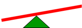
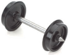
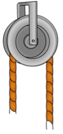
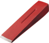
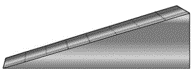
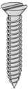
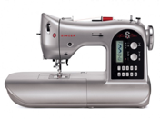
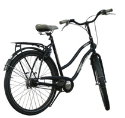

What You Should Know
Machines Make Work Easier
The job of a machine is to make work easier. Work is done when force is applied to move an object or load. For example, you do work when you lift a box.
Force is anything that changes the motion of an object. Lifting is the force you apply to your boxes (load).
Kicking a ball and pulling a suitcase are actions that make those objects move, so they are examples of force.

Machines Need Energy
A machine needs a source of energy in order to do work. Energy is the amount of work something could do. An energy source supplies energy to the machine that does the work.
With some machines, you may be that source of energy.
Wind, the sun, and batteries are examples of other energy sources.
Six Types of Simple Machines
Simple machines are tools that make it easier to do work. They can help us lift or move something heavy, move things apart, hold them together, or change the direction of a force. There are six types of simple machines.
Select each tab to learn more.
 A lever helps lift, pull, or push things. It is a hard bar or board that rests and rotates on a point, but does not bend. The point (fulcrum) does not move, but supports the bar that may move around it.
Examples: seesaw and claw of hammer
 A wheel connected to a bar called an axle makes moving and turning easier.
Examples: bicycle wheels, door knob, and skate board.
 A pulley can help lift or move a heavy load. It is a wheel with a rope, belt, or chain wrapped around it. With effort from you or a motor pulling at the rope, you can lift things.
Examples: flagpole, construction crane
A wedge has two flat surfaces (planes). It is wider at one edge and pointier at the other. It is used to push things apart. When you push down on aa wedge, it moves things sideways, away from it. Because if its shape, it can be used to stop movement, as in the case of a doorstop.
Examples: doorstop and axe blade
 An inclined plane is a ramp or another flat surface that is higher on one side. It helps us move heavy things up and down more easily.
Examples: slide and truck ramp
 A screw is an inclined plane wrapped in a spiral around a cone or a cylinder. We often use screw to hold things together.
Examples: screw, jar lid
Complex Machines
Complex machines are made up of many simple machines and mechanical parts. While some are human-powered like a bicycle, many complex machines use a power supply. A power supply pushes electrical energy to a machine.
  
Can you figure out which simple machines come together to create these complex machines? How about the WeDo forklift and tower crane?